Based on notes by Jiawei Han (SFU), Micheline Kanber (SFU), and Nikos Mamoulas (BU)
Outline
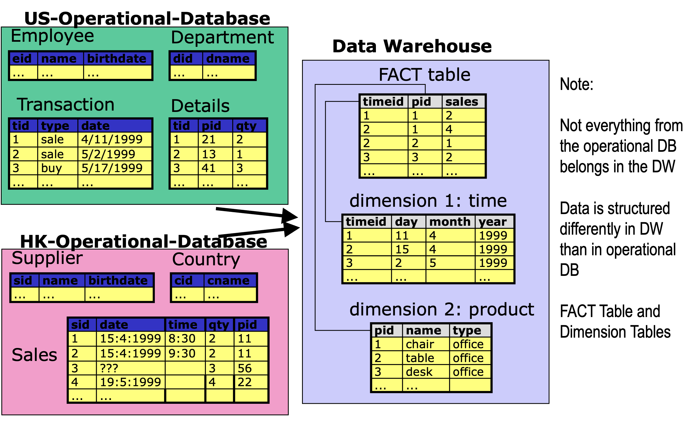
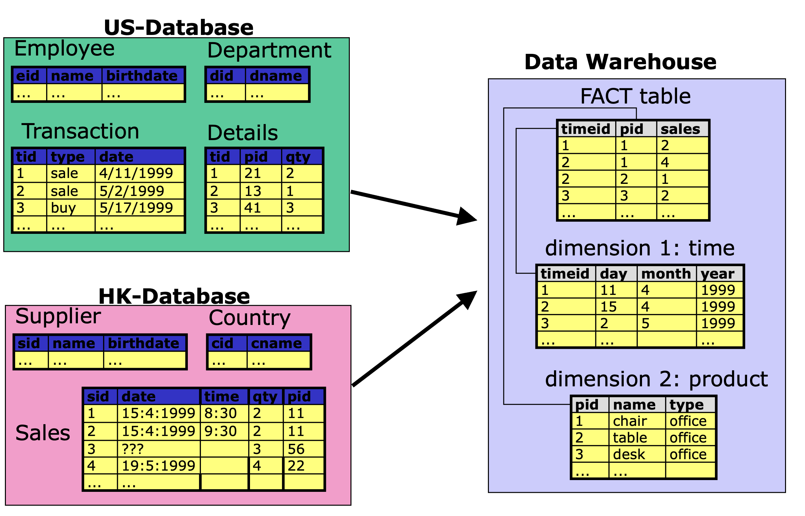
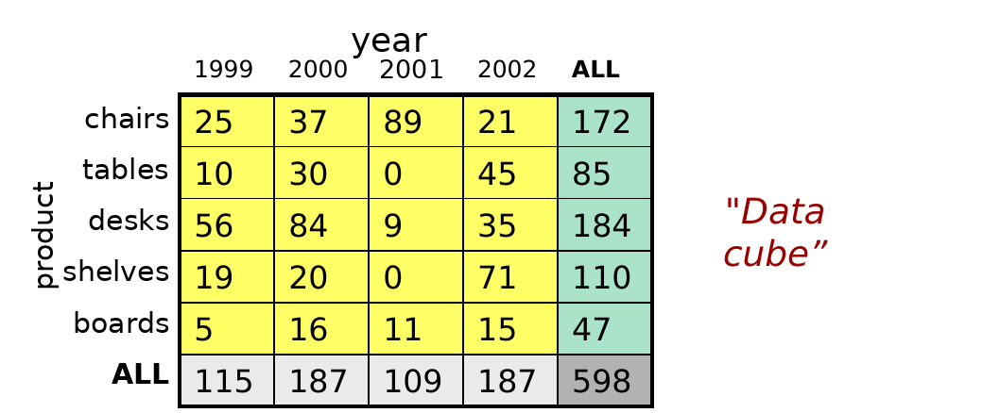
| OLTP | OLAP | |
|---|---|---|
| users | clerk, IT professional | knowledge worker |
| function | day to day operations | decision support |
| DB design | application-oriented | subject-oriented |
| data | current, up-to-date; detailed, flat relational; isolated | historical; summarized, multidimensional; integrated, consolidated |
| usage | repetitive | ad-hoc |
| access | read/write; index/hash on prim. key | lots of scans |
| unit of work | short, simple transaction | complex query |
| # records accessed | tens | millions |
| #users | thousands | hundreds |
| DB size | 100MB-GB | 100GB-TB |
| metric | transaction throughput | query throughput, response |
Outline
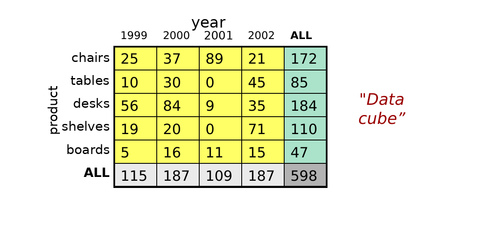
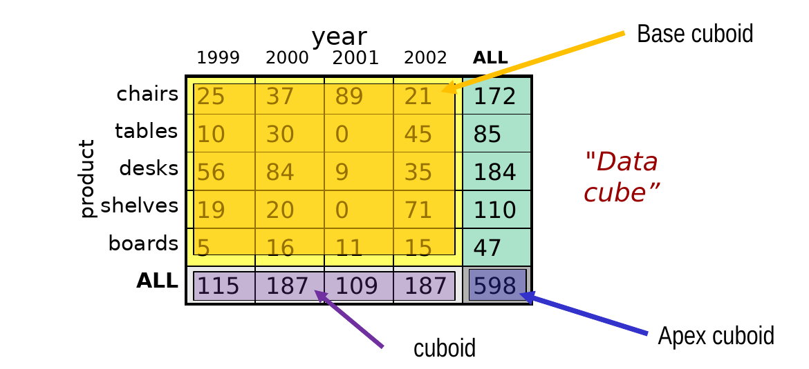
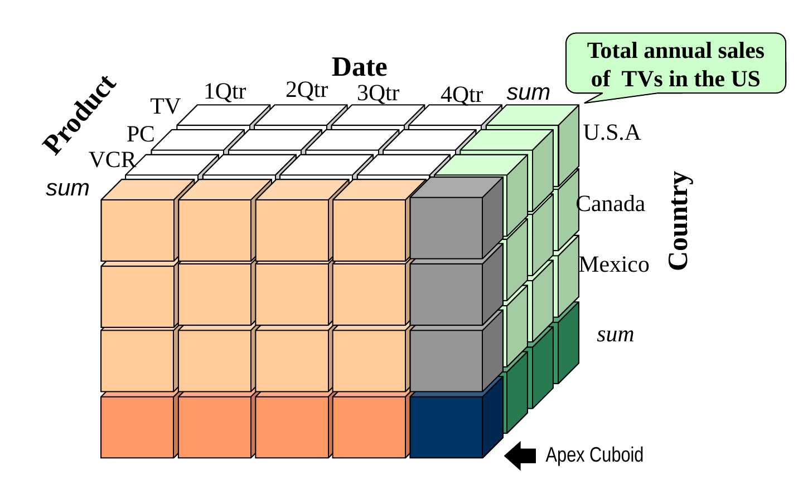
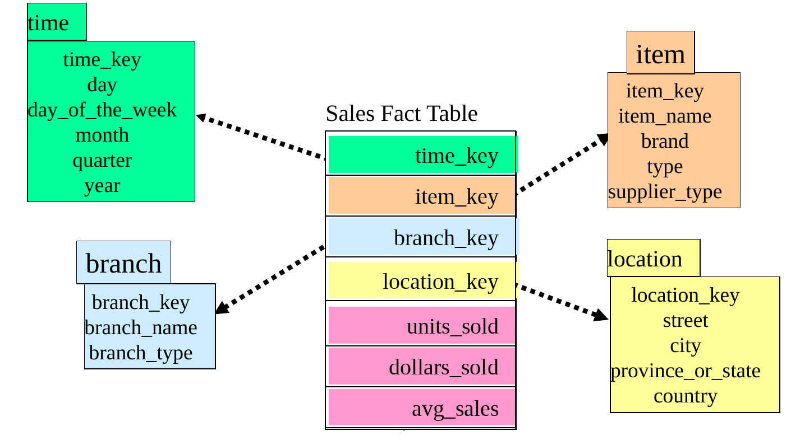
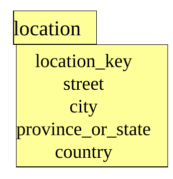
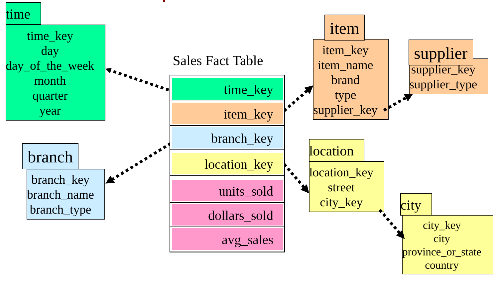
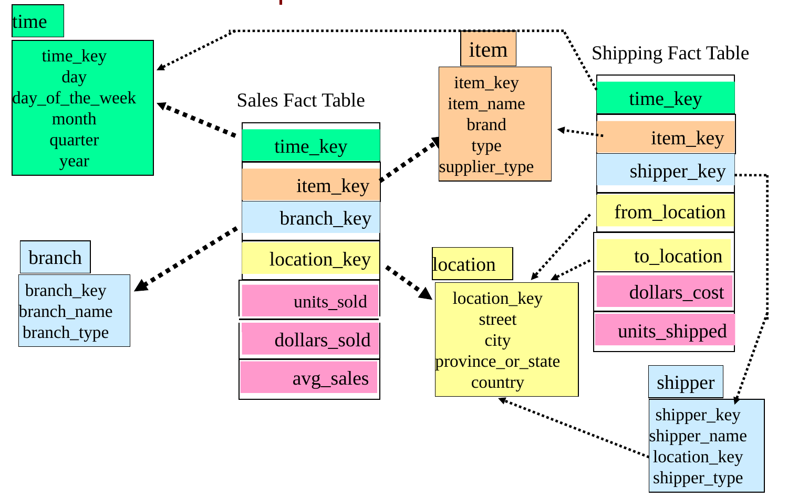
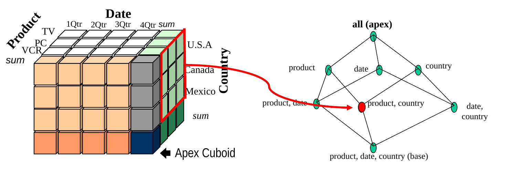